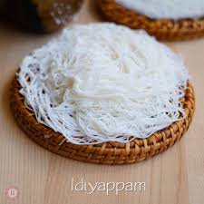

🍜 Idiappam Recipe

Ingredients
- 1 cup rice flour (fine variety)
- 1.25 cups water
- 1/4 tsp salt
- 1 tsp oil
- Fresh grated coconut (optional, for topping)
Instructions
- Boil water with salt and oil in a saucepan.
- Add rice flour and mix quickly to form a smooth dough.
- Cover and let it rest for 5-10 minutes.
- Knead warm dough until smooth. Fill into an idiappam press.
- Press into greased idli plates or steamer tray in spiral form.
- Steam for 8-10 minutes on medium heat.
- Serve hot with coconut milk, vegetable stew, or curry.
Serve With
- Coconut milk sweetened with jaggery
- Vegetable stew
- Kerala-style egg curry or kadala curry
🌾 Tip: Use very fine rice flour for smooth dough and soft idiappams. Add grated coconut for extra flavor.